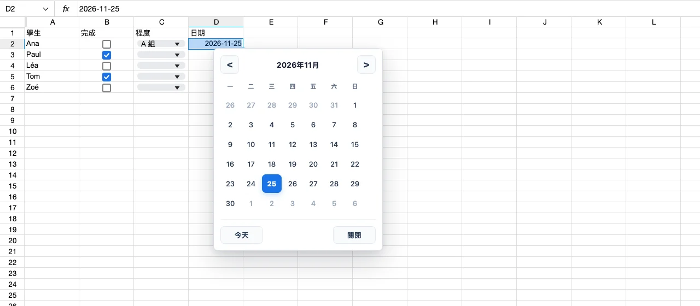

核取方塊、清單與日曆

核取方塊
選擇儲存格，插入 › 核取方塊。按一下可勾選或取消；儲存格的值為 TRUE 或 FALSE。
=IF(B2, "已完成", "待辦")
=SUMPRODUCT(B2:B6, C2:C6)
=SUMPRODUCT(B2:B6, B2:B6)第二個公式對勾選列的 C 欄值求和；第三個公式統計勾選的數目。
下拉式清單
選擇儲存格，插入 › 下拉式選單…。
| 來源 | 內容 |
|---|---|
| 值 | 選項，每個輸入框一個；新增選項；不含逗號 |
| 來自範圍 | 以其儲存格為選項的範圍：工作表2!$A$1:$A$10 |
不帶 $ 的範圍會像填滿的公式一樣逐格移動。其儲存格變化時，選項隨之變化。
儲存格顯示箭頭；按一下開啟選項。不接受清單以外的值。
日曆
按兩下日期儲存格會開啟日曆：選擇日期，用 < 和 > 切換月份，今天 選擇今天。凡設有日期格式的儲存格（即使為空）都會開啟日曆，除非其中有公式或已鎖定。
要用日曆填寫一欄日期：選擇該欄並設定 日期 格式。
移除
Delete 移除儲存格中的核取方塊或清單及其值。
核取方塊和清單儲存在 Excel 檔案中；核取方塊在其中即為 Excel 核取方塊。